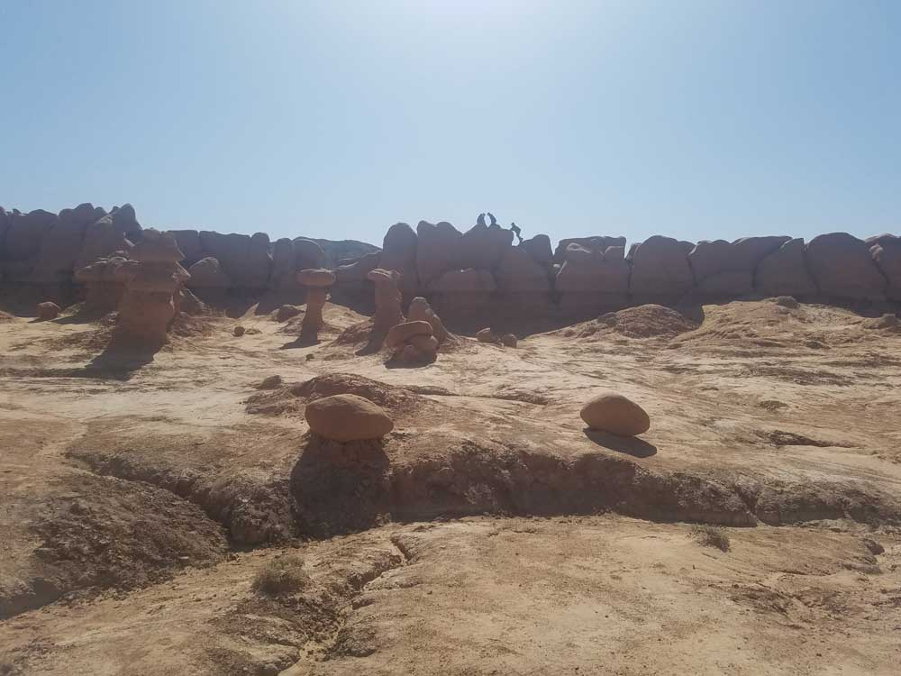
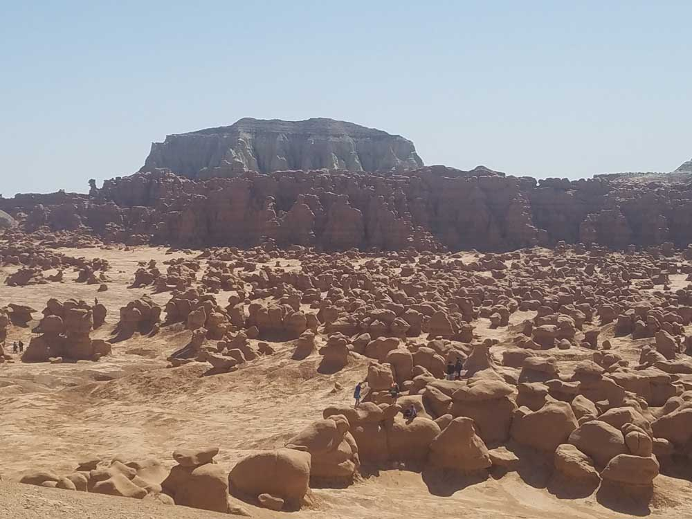
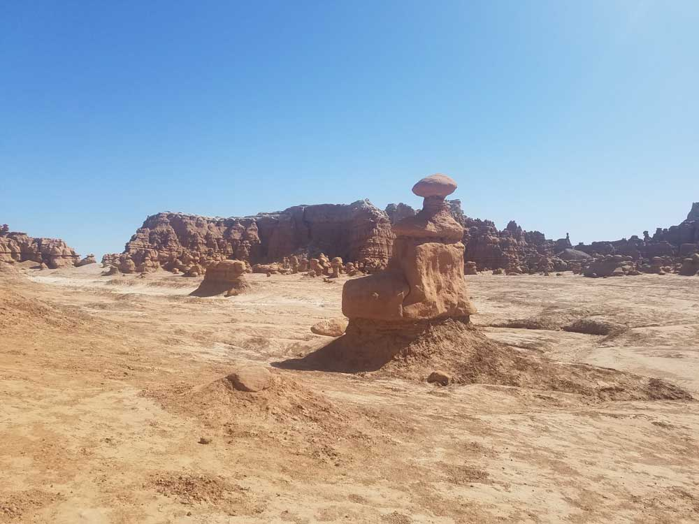
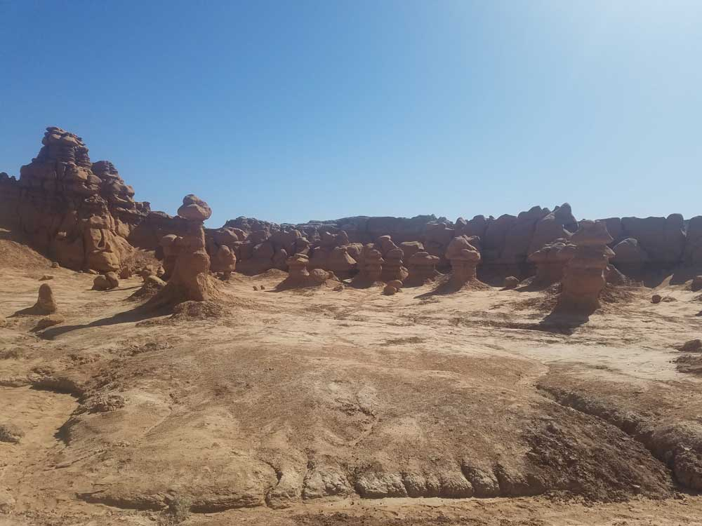

State park featuring thousands of hoodoos, referred to locally as goblins, which are formations of mushroom-shaped rock pinnacles, some as tall as several yards
Overview
Goblin Valley State Park in the San Rafael Desert is a valley of thousands of odd mushroom-shaped rock formations, called goblins, weathered from Jurassic Entrada sandstone about 170 million years old. The valley was first noticed by cowboys and surveyors, and Utah protected it as a state reserve before it was designated a state park in 1964. Its rock formations, which look like a crowd of mushroom-shaped creatures, famously served as the alien planet in the 1999 comedy Galaxy Quest. Visitors come to walk and scramble freely among the goblins, hike nearby canyons and camp under dark desert skies on the east edge of the San Rafael Swell.
Access
Goblin Valley sits in a remote part of Emery County, about 12 miles northwest of Hanksville and roughly 50 miles south of Green River. From Interstate 70, most visitors take SR-24 south and turn west onto the paved Goblin Valley Road, which leads about four miles to the park entrance. The road is paved all the way, so ordinary passenger cars can reach the main viewpoint, campground and trailheads. There is no public transportation, and services are very limited, so fill your gas tank and bring plenty of water, food and sun protection before leaving Green River or Hanksville.
Seasons
The park is open year-round, with spring and fall the most comfortable seasons for walking among the goblins. Summer temperatures often reach the 90s and 100s Fahrenheit, with little shade in the valley, so plan to hike in the early morning or evening and carry plenty of water. Winter days are cool to cold and can be quiet and uncrowded, with occasional snow or frost on the formations. Flash floods can occur in the area's canyons and washes after summer thunderstorms, so avoid slot canyons and drainages when rain is in the forecast. Drone use is restricted during the busy season, so check the park rules before bringing one.
Things to Do
Wander the Valley of the Goblins
The main attraction is the open basin of goblins just below the observation shelter, where there are no marked trails and visitors can walk, climb and explore among thousands of hoodoos. Morning and evening light is best for photography and keeps temperatures manageable.
Hike Canyons and Slot Canyons
Several short trails leave from the valley and campground area, and nearby Little Wild Horse Canyon offers a popular slot-canyon hike in the San Rafael Swell. Canyon hikes should be avoided if rain is possible.
Camp and Stargaze
The campground and yurts make an easy base, and the park's remote location gives clear night skies for stargazing and astrophotography.
Biking, Disc Golf and Other Recreation
The park also supports mountain biking, a disc golf course, canyoneering, horseback riding and geocaching, and the surrounding San Rafael Desert is popular with off-highway vehicle riders.
Top Trails
Entrada Canyon Trail
Length: Approximately 1.3 to 1.5 miles one way (sources vary)
Elevation Gain: Minimal
Difficulty: Moderate
This trail leads from the campground area through a wash into the Valley of the Goblins and connects to other trails for loops through the formations.
Carmel Canyon Loop
Length: Approximately 1.5 miles round trip
Elevation Gain: Minimal
Difficulty: Moderate (some rock scrambling)
This loop drops into a small canyon and passes through goblin formations and narrow sandstone passages, with some scrambling over rocks.
Curtis Bench Trail
Length: Approximately 2.1 miles out and back
Elevation Gain: Minimal
Difficulty: Easy to Moderate
This trail follows the Curtis Formation above the valley and offers views over Goblin Valley toward the distant Henry Mountains.
Grand Circle
Length: Approximately 3.5 miles loop
Elevation Gain: Minimal
Difficulty: Moderate
The longest loop in the park links Entrada Canyon, Carmel Canyon and part of Goblin's Lair for a full tour of the goblin landscape.
Visitor Centers
The park visitor center is the place to get trail maps, current conditions and information about the goblins, geology and area history. It is typically open from 9am to 5pm, and drone permits are issued in person there. A daily weather report is posted for visitors planning canyon hikes. Restrooms and an observation shelter are near the main viewing area.
Camping and Lodging
Goblin Valley State Park has a campground with sites that include shade structures and picnic tables, a group camping area and two reservable yurts; reservations are made through Utah State Parks and fill quickly in spring and fall. There are no hotels in the park. The nearest services are in Hanksville, about 12 miles away, which has a few motels and small campgrounds, and in Green River, about 50 miles north, which has the area's broadest selection of chain hotels and motels. Within roughly two hours, Torrey near Capitol Reef National Park and Moab offer additional lodges, hotels and campgrounds.
Highlights
- Valley of the Goblins: a free-roaming area, best in the morning and evening
- Goblin's Lair and Little Wild Horse Canyon: a slot canyon hike nearby
- Camping: a campground and yurts, with clear night skies
Plants and animals
The flora of Goblin Valley include Mormon tea, Russian thistle, Indian ricegrass, and various cacti, as well as junipers and pinyon pines at higher elevations.
Fauna include jackrabbits, scorpions, kangaroo rats, pronghorns, kit foxes, midget faded rattlesnakes, and coyotes.
Geology
The unusual stone shapes in Goblin Valley result from the weathering of Entrada sandstone. The Entrada consists of debris eroded from former highlands and redeposited on a former tidal flat of alternating layers of sandstone, siltstone, and shale. The rocks show evidence of being near the margins of an ancient sea with the ebb and flow of tides, tidal channels that directed currents back to the sea and coastal sand dunes.
Joint or fracture patterns within the Entrada sandstone beds created initial zones of weakness. The unweathered joints intersected to form sharp edges and corners with greater surface-area-to-volume ratios than the faces. As a result, the edges and corners weathered more quickly, producing the spherical-shaped 'goblins'.
The Entrada sandstone from which the hoodoos developed was deposited in the Jurassic period around 170 million years ago.
Film
Goblin Valley was prominently featured in the movie Galaxy Quest (1999) as an alien planet. The eroded sandstone dunes in the valley inspired the design of the fictional planet's rock monsters.
This article uses material from the Wikipedia article "Goblin Valley State Park", which is released under the Creative Commons Attribution-Share-Alike License 3.0. Additional information from Utah State Parks.



